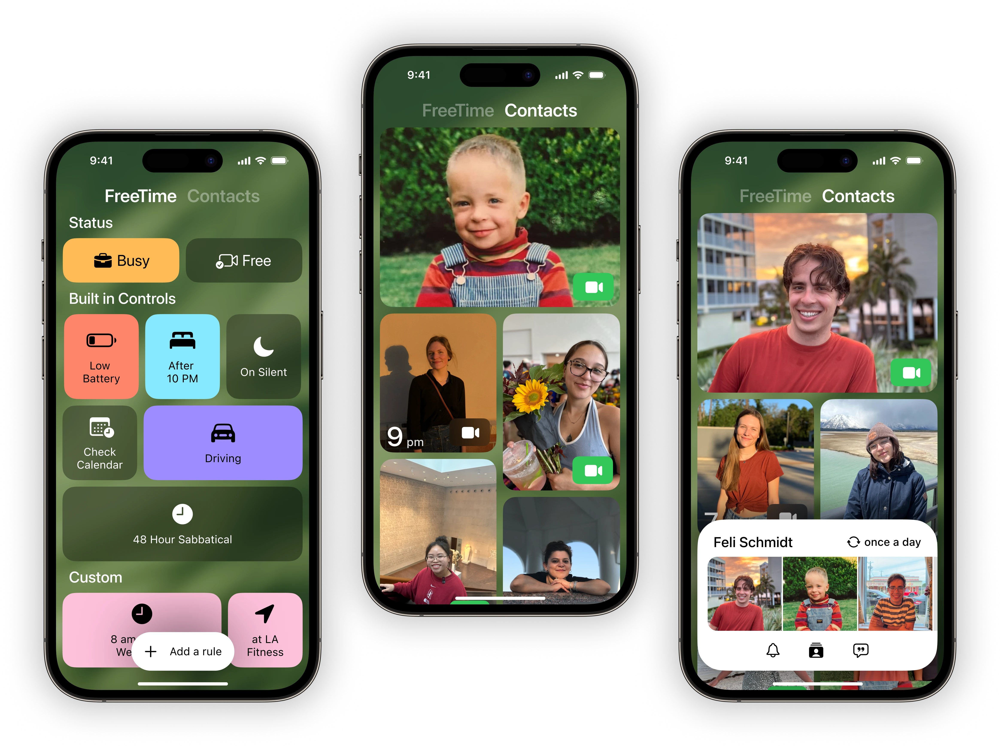
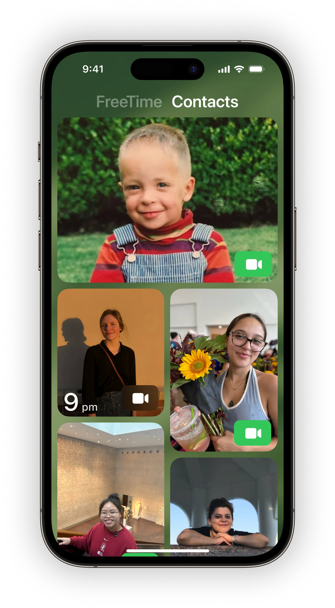
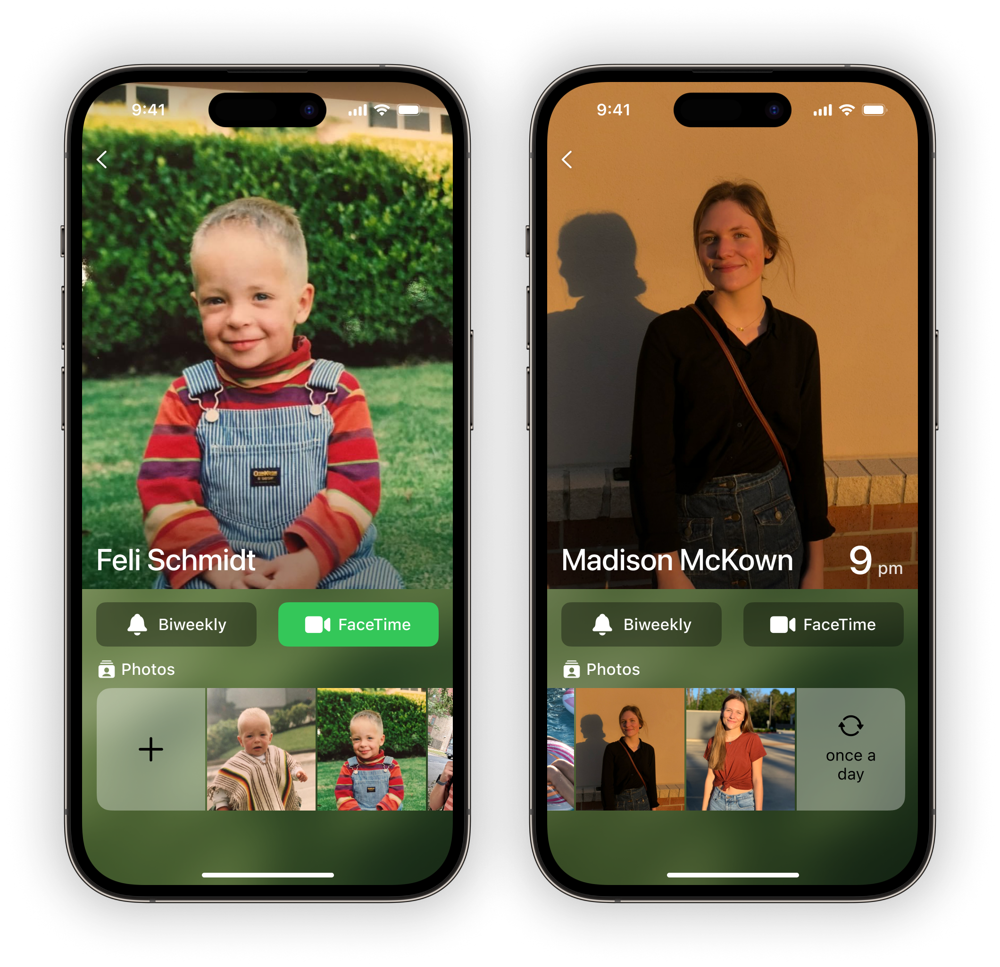
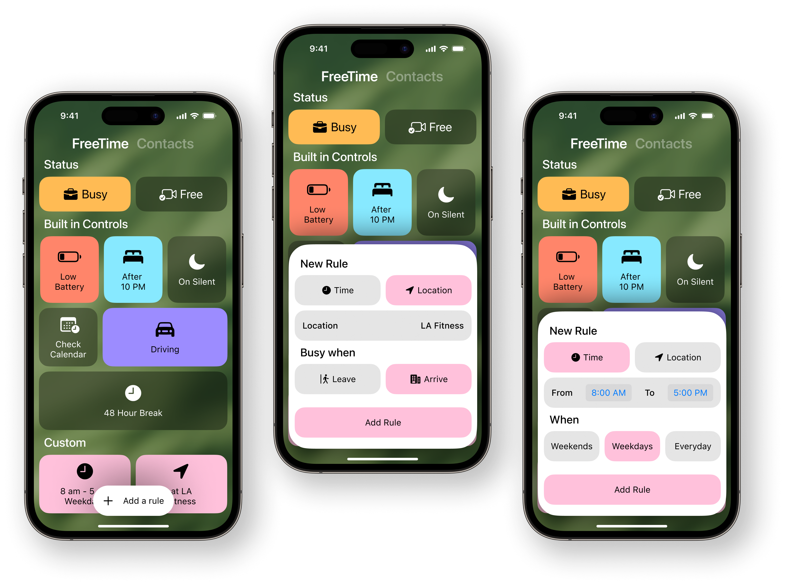
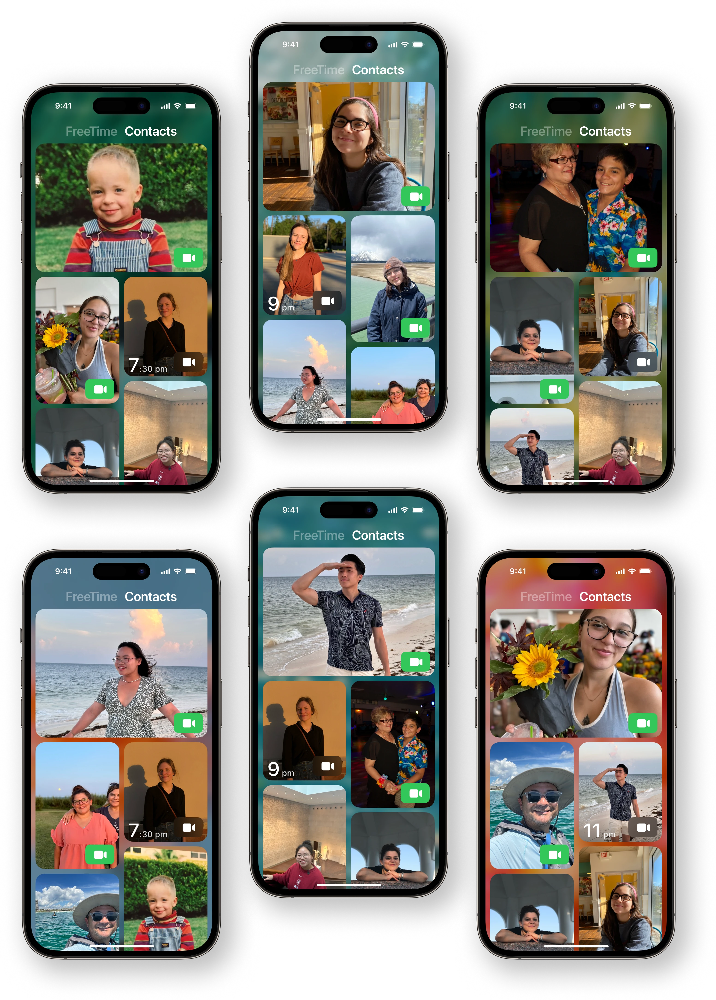
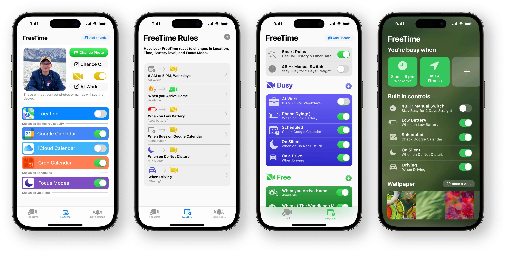
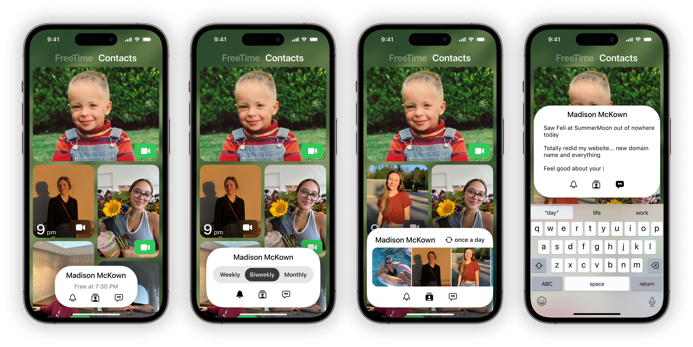

Free to FT
Catch up again.
Are you free?

Are you free?
Designed for Spontaneity.
Free To FaceTime makes catching up with a distant loved one a breeze. Know exactly who’s free to call and who’s free later. Never forget that weekly call to mom. And personalize your contacts with moving photos, video, and more like never before.
In Development
Research
Introduction
Staying connected through life changes can be tough, and finding the right time to catch up is a challenge—if we remember to catch up at all.
While scheduling calls is an option, it can feel impersonal, especially with friends and family who aren't just colleagues.
While scheduling calls is an option, it can feel impersonal, especially with friends and family who aren't just colleagues.
In a Nutshell
Free to FT serves as a simple extension app to FaceTime, the leading video call platform in the U.S.
It makes remembering to reach out easier, without losing the feeling of spontaneity.
It makes remembering to reach out easier, without losing the feeling of spontaneity.
What People Say
15 unstructured interviews and 3 focus groups (n=31) revealed forgetfulness, limited free time, and not wanting to burden busy loved ones as the top three obstacles to connect.
Other answers included: appearance, awkwardness due to the time in between calls, and not feeling in the mood to talk.
Other answers included: appearance, awkwardness due to the time in between calls, and not feeling in the mood to talk.
Call Gap “awkwardness”
When questioned about not reconnecting with friends, a surprising finding emerged: Most gave up after around 4 missed calls.
What's worse, the longer it had been since their last conversation, the more uncomfortable it felt to reach out, resulting in a cycle of diminishing contact.
For those going through significant life changes, an average of 5 friendships that they wished hadn't faded were lost in the past 4 years.
What's worse, the longer it had been since their last conversation, the more uncomfortable it felt to reach out, resulting in a cycle of diminishing contact.
For those going through significant life changes, an average of 5 friendships that they wished hadn't faded were lost in the past 4 years.
Constraints
“It” should be compatible with the leading video platform, accessible across various age groups, and minimally determine your availability.
“It” should be easy to set up, easy to invite friends, and be reliable enough to use weekly.
“It” should make it hard to forget to call, reliably inform a user if someone is free, and maintain a sense of spontaneity.
“It” should be easy to set up, easy to invite friends, and be reliable enough to use weekly.
“It” should make it hard to forget to call, reliably inform a user if someone is free, and maintain a sense of spontaneity.
Contacts
See who's Free
Contacts with an all-face design.

Contact Design
Regardless of font-size, wiser participants always saw a face before the name.
Several iterations (documented in the footer) explored how contact size could be used to convey less or more information. Approaches with the least face obstruction won out in prototype tests.
Several iterations (documented in the footer) explored how contact size could be used to convey less or more information. Approaches with the least face obstruction won out in prototype tests.
Human Interface
Contacts are organized by last call, with the more recent calls toward the top.
The interface is simple and displays elements in line with prior expectations: recents at the top, green is call, and grayed buttons indicate a changed condition.
The interface is simple and displays elements in line with prior expectations: recents at the top, green is call, and grayed buttons indicate a changed condition.
Contact Pages
Set call reminders and add photos.

No More Phone Tag
Set reminders tailored to your unique relationships. Get nudged at just the right intervals, and only when the other person is free to talk.
Never forget your weekly call with Mom again. Or your monthly check-in with a long-distance friend.
Never forget your weekly call with Mom again. Or your monthly check-in with a long-distance friend.
Moving Photos and Update Notes
Contacts come alive with photos, videos, and voice clips—rich reminders of shared memories.
Come back everyday to a gallery of your favorite people, taking you back to when there wasn't so much distance.
Come back everyday to a gallery of your favorite people, taking you back to when there wasn't so much distance.
FreeTime
Location and Time
Your availability adjusts on its own.

Notifications
Get reminded only when they're free.

Add a Wallpaper
Make it yours.

Lessons Learned
Chasing a feeling
I continued iterating until something clicked. FTF needed to be warm and welcoming like a well-loved home, yet crafted with iOS fluidity in mind.
When my grandmother smiled when opening the prototype, just staring at her children's faces, not reading names, not thinking or trying to figure something out—I knew I had something wonderful.
When my grandmother smiled when opening the prototype, just staring at her children's faces, not reading names, not thinking or trying to figure something out—I knew I had something wonderful.
A mind that renders
Every element demands power, not only from your device but also from your mind. Exercise care in what you present to the eyes.
An interface should fit the variability of people. FTF is designed for both quick, on-the-go glances and leisurely, couch-bound gazes. Each element carries intention and purpose, defending itself well.
An interface should fit the variability of people. FTF is designed for both quick, on-the-go glances and leisurely, couch-bound gazes. Each element carries intention and purpose, defending itself well.
Getting to "Home"

Getting to FreeTime

Adaptive Toolbar - Discontinued

 Home
Home
 Work
Work
 About
About
 Audio
Audio